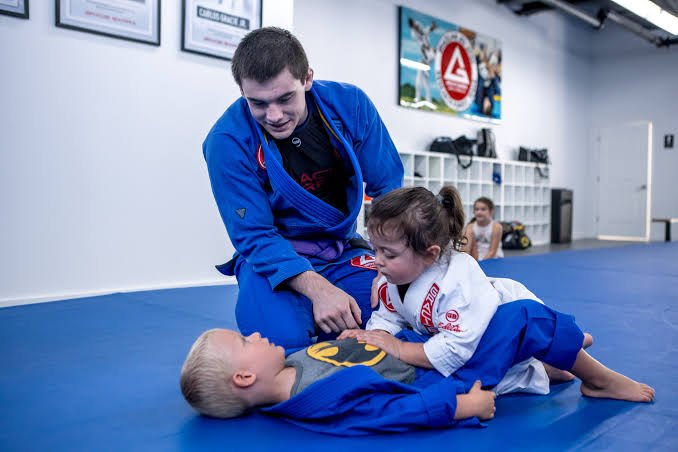
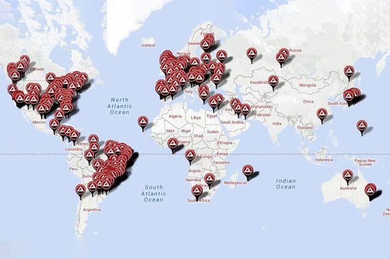

Poucas organizações esportivas conseguiram causar um impacto tão grande quanto a Gracie Barra. O que começou em uma academia no Rio de Janeiro tornou-se um movimento global que conecta milhares de pessoas através dos mesmos valores e da mesma paixão pelo Jiu-Jitsu. Atualmente, existem escolas Gracie Barra espalhadas por diversos países. Mesmo com culturas diferentes, todas compartilham a mesma missão: transformar vidas através do Jiu-Jitsu. Cada faixa conquistada representa horas de dedicação, esforço e aprendizado. Cada aluno que entra em uma academia inicia uma jornada de crescimento que vai muito além da prática esportiva.
A Gracie Barra desempenhou um papel fundamental na divulgação internacional do Jiu-Jitsu brasileiro. Se hoje a modalidade é reconhecida mundialmente, grande parte desse reconhecimento se deve ao trabalho realizado por professores, atletas e líderes que ajudaram a espalhar a arte suave pelo planeta. A organização também contribuiu para o desenvolvimento técnico do esporte, formando campeões mundiais e incentivando a participação em competições de alto nível. Mas seu legado não se resume às medalhas conquistadas. O maior legado da Gracie Barra está nas pessoas. Está no aluno que ganhou confiança para enfrentar desafios. Está na criança que aprendeu a respeitar os outros. Está no adulto que encontrou uma atividade capaz de melhorar sua qualidade de vida.

A história da Gracie Barra é a prova de que grandes transformações começam com um sonho, dedicação e propósito. Ao longo de décadas, a organização construiu muito mais do que academias. Construiu uma comunidade mundial baseada em valores, amizade, respeito e evolução constante. Seu legado continua crescendo a cada novo aluno que veste um kimono pela primeira vez e decide iniciar sua jornada no Jiu-Jitsu. Mais do que ensinar técnicas de luta, a Gracie Barra ensina coragem, disciplina e determinação. Ensina que a verdadeira força não está apenas nos músculos, mas também na mente, no caráter e na capacidade de nunca desistir. Por isso, a Gracie Barra não é apenas uma das maiores organizações de Jiu-Jitsu do mundo. Ela é um símbolo de tradição, excelência e transformação, inspirando gerações e mantendo viva uma história que continua sendo escrita todos os dias.
